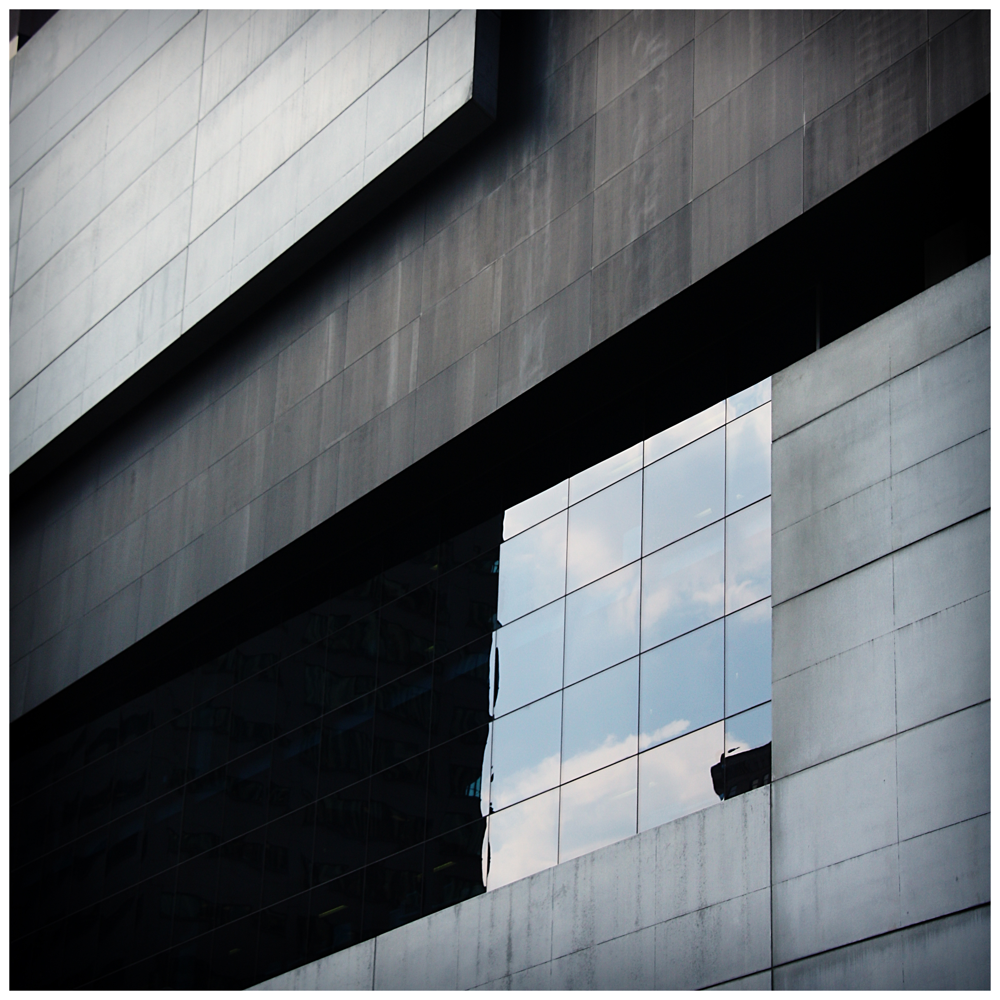

Basic Facts
Rosenthal center for contempory art is in Cincinnati, Ohio and was designed by Zaha Hadid from 1997 to 2003. The architecture provides space for exhibits, installations, and performances. The users of the building are people of Cincinnati, artists,
Architectural Drawings
Cross section drawing of the building
Reflected ceiling plan
Side view of the building. Shade coming from the
different dimension of the side pieces
makes the building stand out.
Information about the Building in the Papers
Stephens, Suzanne. “Zaha Hadid Revs up a Tight Site in Cincinnati with the ROSENTHAL CENTER FOR CONTEMPORARY ART and Draws a Crowd.” Architectural record 191.8 (2003): 86–. Print.
Rosenthal Center for Contemporary Art is unlike other Zaha Hadid’s projects, which were futuristic and avant-gardistic, sits modestly in downtown of Cincinnati, yet still achieves the imaginative possibility of architecture. Unlike Guggenheim, Rosenthal center cuts in between the circulation and the art installations. It shouldn’t be compared to other gallery since there are no fixed exhibit, so it’s better to view as a tourist attraction for people to enjoy architecture.
Sekules, Kate. “Worth the Trip: Cincinnati.(Lois & Richard Rosenthal Center for Contemporary Art). ” O (New York, N.Y.) 5.9 (2004): 92–. Print.
Rosenthal center the first major art institution in the US designed by women. Its exterior is constructed using matte-black aluminum and smooth white concrete and wrapped around with glass with interesting looking ramps on the side. Inside there are exhibit about underground railroad and variety other eye-seeking content, so it is worth visiting.
Interior of the building
Inside of the building. Photo is showing
the lobby of the art center, which
has glazing cement floor.
Surroundings of the building using Google Earth
Cincinnati from Google Earth
Rosenthal Center for Contemporary Art is completely in the middle of downtown Cincinnati, which is urban area. Moreover, we can observe that downtown of Cincinnati is totally planned city plan since streets are in straight grids. Also, there was few more complex cultural space, such as museums, art centers, libraries. There seems to be a interstate highway going through the downtown of Cincinnati, which is unique feature of American cities.
Interview on the building
Source: https://www.bbc.co.uk/sounds/play/w3ct1x4k
Zaha Hadid considered accessibility as one of the important aspect in designing the building. This was one of the first major project. Before then she was known as “paper architect.” She says that fluidity, which is her major characteristic in designing a building, came from her Arab heritage. Her plan for Cardiff Bay Opera house fell apart by many criticism by tabloid magazine. Problem with the Rosenthal Center was that 11000 sqft was a small space to work with, and it was in the corner of a street, so idea of nesting came from having to have different kinds of spaces in small work area. After construction, it had great reviews of the architecture.
Experience with the Building
My dad had a chance to go see this masterpiece on his business trip. He said that it was really different style of usual Zaha Hadid’s architecture, for example DDP in Seoul, South Korea. Exterior looked like big chunk of block was just on top of each other like a lego.
Video about the building
Main idea for the contemporary art center was to build a very welcoming structure and make art accessible to diverse population. So she made a concept called ‘urban carpet.’ For example, the building has its entrance in the streets and not having to go up the giant stairs. In other words, people could just ‘walk in’ to the center. To break the paradigm of museums being “white cube,” she designed the building as 3D jigsaw puzzle to create all kinds of different spaces. She does great job in incorporating the fact that contemporary art doesn’t just expand horizontally but in 3-dimentionally.
Flickr Photos
The curve shape of the wall stand out as its being one of the detailed spots in the structure, also how the stars and ceiling make up zig-zag lines in counter to the curved wall.

Almost chaotic stairs go up and down in the 3D spaces creating the Hadid’s “urban carpet.”

The texture of interior wall of gallery is very detailed.


Four different shades of exterior wall makes the building even more special. By using three different materials on exterior it creates deeper visuals.
The different depths of exterior wall creates different shade on the exterior wall of the building with daylight.
Building's Appearance in other Web Pages
Source: https://archello.com/project/the-lois-richard-rosenthal-center-for-contemporary-art
Author claims that architecture can be a catalyst for instigating and influencing the process of making, as well as viewing, art. I definitely agree with the author. The space, which person is standing has effect on the experience one is having within the space. It could amplify the emotions and perceptions when viewing art.
My Drawing of the Building
Finally... It's my turn to show my skill...
My Drawing
Please don't judge on my drawing...
Thank you for reading this!
I don’t think you can teach architecture. You can only inspire people.
Zaha Hadid